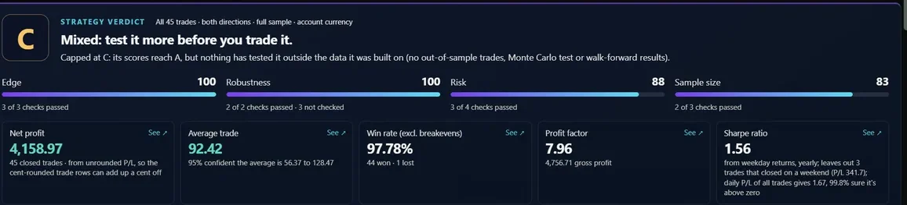
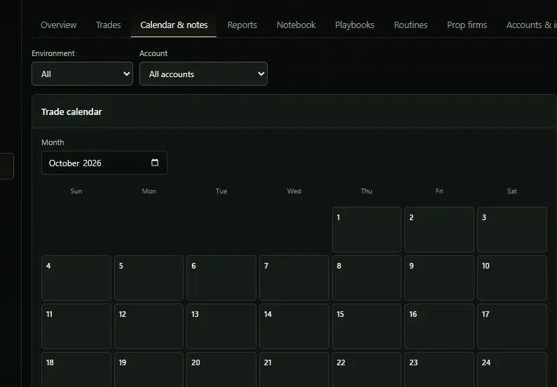

Everything Trader Cockpit does.
Every part of the Windows app, area by area.
Strategy Builder
Search thousands of rule combinations on the market you pick, with the costs and rules you set.
- Genetic, random or sequential search over the rule space, with progress you can watch as it runs.
- Rule parts for conditions and price levels, built on the app's own indicator math.
- Your own trading rules, costs and money management on each step, with a reset to default for any part.
- Strategy templates and build recipes to start from, with a template's rules shown in plain lines before you use it.
- Crypto markets get sensible starting exits and costs, and the app tells you what it changed.
- Saved research ideas and candidates, and a retest of any strategy with its saved settings.
- One button on the first screen saves the day's prices, opens Builder on BTC/USD and starts a strategy search.
Workflows and robustness checks
Put a strategy through ordered steps, unattended, and see why strategies drop out.
- Ordered steps that run on their own: create, edit, save and reopen a workflow.
- A library of ready-made validation workflows and strategy recipes, with search by market and timeframe.
- Robustness checks on your results: out-of-sample periods, other markets, higher and lower timeframes, slippage and Monte Carlo.
- Walk-forward windows, with a recompute when you change them.
- Move a copy of a workflow to your saved market in one click. Each step keeps its own timeframe where the bars allow, and tells you when it can't.
- Retest steps for other markets and extra held-back periods.
Results
See how a strategy really traded, with a plain verdict that says so when it's weak.

- One verdict for a strategy, with the reasons behind it.
- Summary, trades, equity, results by period and by market, and trade excursions.
- A trade list with position value, P/L %, run-up and drawdown, a column chooser and CSV.
- Monte Carlo tests and walk-forward results on a strategy's trades.
- Prop-firm challenge and funded-phase simulators, with rules and payouts per symbol.
- Compare two runs side by side, and analysis tools for drawdown, edge decay and news impact.
- Show a strategy on its chart, with where each entry and exit rule was true and why it traded or didn't.
- The strategy written as code in EasyLanguage, MetaTrader, Pine or Python.
- Tick strategies and send them to a retest: on other markets, on extra held-back periods, or only the ones you selected.
Portfolio
Combine your saved strategies and see their results together.
- Auto build: build portfolios from your saved strategies, and send strategies straight from Results.
- Compose: pick strategies yourself, with a weight for each, and see the combined results.
- Let the app search for the best weights and see every mix it tried on a chart.
- Add a buy-and-hold position beside your strategies.
Charts
A full charting workspace on real market data, with indicators, drawings, watchlists and your own Pine scripts.


- Chart types: bars, candles, hollow candles, volume candles, line, line with markers, step line, area, HLC area, baseline, columns, high-low, Heikin Ashi, Renko, line break, Kagi and range.
- One grouped indicator list: the standard built-in indicators at their usual settings, the Builder's own indicators, patterns and profiles, and your own.
- Nearly 1,000 open-source community indicators in the same list, by category and search. Each runs on the chart and opens its code as a copy.
- Drawings: trend line, ray, extended line, rectangle, horizontal line and ray.
- VWAP with bands, anchored, rolling and from earnings dates; sessions, killzones and opening range breakouts in New York time; a smart-money study.
- Machine-learning buy and sell signals with a read-out of how they would have done on the visible bars.
- Your own Pine v5 or v6 indicators and strategies run on the chart. Anything that can't run is listed by line.
- Ten ready-made strategies to run on any chart. The Strategy Tester shows returns, drawdowns, a buy-and-hold comparison and a sortable trade list you can download.
- Run a strategy on the daily chart of a future, a forex pair or a US share. Futures use the contract's own tick size and point value.
- Live US stock charts with your Alpaca account connected: today's daily candle as it forms, and 1, 5, 15 and 30 minute charts through the trading day.
- Symbol search across markets: type a stock, future, forex pair, index or coin, including micro and mini futures by name.
- Watchlists for any market: your own columns, grouping by exchange or kind of market, flags, notes, several lists, an alert on a whole list, and hotlists that rank a whole exchange. Right-click a row to add it to another list, and move with the arrow keys. Import, export or copy a list as text.
- Live stock prices in the watchlist with your Alpaca account connected: the last price and the day’s change.
- A ready-made Markets list of stocks, indices, forex pairs and futures. One click opens the daily chart with up to twenty years of history.
- Alerts on price, values, indicator lines and drawings, with notices and sounds, and a log of what fired.
- Side panels that drag wider or fold away: a data window and an object tree for your drawings and indicators.
- Backtest this market: one button on a Coinbase or Kraken chart opens Builder on that market, with its fees already set.
- Bar Replay, saved views, compare charts, and up to 16 charts at once on a paid plan.
Order flow and profiles
See what traded inside each bar on crypto charts, recorded from the exchange's public feed.


- Footprint with per-bar delta and volume, value area, stacked imbalance and row size in ticks.
- TPO market profile, with letters, colours by time, volume, trades or delta, and trading hours.
- Volume profile: fixed range, session and periodic, with value area and point of control.
- Measured delta, cumulative delta, trade counts, volume tails and bar statistics.
- An order book heatmap: resting bids and offers over time under the candles, from Kraken or Coinbase, with the largest walls named.
- Order book detail: large orders added and pulled, absorption and sweeps flagged, and a depth pane under the chart.
- A liquidation heatmap: real liquidation prints, and an estimate of the price levels where leveraged positions would be liquidated.
- Gamma exposure by strike, drawn from an option chain file you import.
Apollo assistant
An assistant beside your work that turns an idea into a strategy you can test. You confirm every change.
- Describe an idea in plain words and get a Builder rule part, or a Pine script that's checked before you see it.
- It fills in Builder settings for you to review, and asks before it compiles or starts a run.
- It recommends a validation workflow for your market and timeframe, and reads your strategy's results with you: the same figures and trades you see.
- It proposes one chart change at a time, shown as a card you apply yourself.
- It writes custom indicators for your charts, and does the maths with more than 50 built-in finance methods: position size, margin, risk of ruin, option Greeks and more.
- Attach a trade log, a PDF or a chart picture. Your chats are saved and can be exported.
- Turn an open-source Pine indicator into a Builder building block. Apollo checks it against the original bar for bar on your saved bars before you save it.
- Apollo never sends live broker orders. It runs on Apollo credits, included with each paid plan.
Models
Machine-learning research on your saved markets or a strategy's trades, judged on data held out from the fit.
- Studies with purged cross-validation, the deflated Sharpe ratio and triple-barrier labels.
- Your chart indicators as features, or a strategy's own trades as the data.
- Held-out forecasts shown on the chart, and a route from a model to a Builder strategy and a Library validation.
- Any model you name, such as ARIMA or EGARCH, or one you describe to Apollo: fitted on the earlier bars, checked on the later bars against a baseline, and explained in plain words.
- A sample study with clearly labelled made-up trades, so you can learn the page before using your own data.
Community
Indicators, strategies and ideas inside the app. Use one with a click, and publish your own.

- Browse, search and sort indicators, strategies and ideas. An indicator goes on your chart in one click; a strategy opens in the tester.
- Tested strategies come with their rules, a results table per market and an A to F grade that says so when a result is weak.
- Test a community strategy on your own chart, or re-run its published test on your PC and see your numbers under the published ones.
- Every community indicator shows a picture of what it draws and one line saying what it does.
- Editors’ picks, “Used by” counts on every card, and sorts for trending this week, most liked, most used and newest. Every author has a page.
- Like an item, follow its author, comment and reply. Comments stay on markets and trading: insults, sales pitches and links are refused before they post, and anyone can report a comment.
- Star an item to keep it under Saved. A saved indicator also shows under Favorites in the chart’s indicator list.
- Publish your own indicator, chart idea or tested strategy. Each is reviewed before it goes public, and you can update it later.
- On a paid plan, publish a tested strategy straight from Results, or build a community strategy with Apollo.
Journal
Review executions, research results, routines and decisions in one place, kept on your PC.


- Trades, a calendar with daily notes, reports, a notebook, playbooks, routines and prop-firm tracking.
- Import statements from many broker file formats.
- Attach files to notes, use note templates, or draft a note with Apollo.
Market data and import
Connect a broker or exchange, or bring your own files, checked row by row.
- Coinbase and Kraken: free public history and live prices with no exchange account, at any chart timeframe; Builder takes M2 to D5.
- Daily history for stocks, indices, forex pairs and futures, from the watchlist or the symbol box.
- Forex, metals and index history downloaded inside the app, at no charge, with every timeframe built from it.
- Your own price files: CSV in common layouts and TradingView's chart export, checked row by row.
- MetaTrader 5 history and quotes from your own terminal.
- Option chain files with open interest, one per underlying.
- Daily bars cut on the exchange's own trading day from a futures or forex file of shorter bars, with holiday sessions handled. Futures files are matched to the exact contract (micro, mini or standard) and show its point value.
- Saved history kept in your own data folder.
Exports
Take a strategy to your platform, or get a clear reason why it can't match.
- TradingView: retest a strategy on TradingView's bar-close timing, then export it as Pine. It refuses what can't match, with the reason.
- MetaTrader 5: our own indicators, for use in experts.
- Trades as CSV or Excel, charts as PNG, a printable report and prop-firm results from Results.
- Chart data and chart images from any chart.
Paper trading
Practice with simulated money: live on crypto charts, on US stocks with an Alpaca paper account connected, and on saved history in Bar Replay.

- Our own order simulator, with commission, leverage and shorting. Orders fill at the live bid and ask on crypto charts with no broker account.
- US stocks at the live bid and ask while the market is open, with an Alpaca paper account connected. The ticket shows how old its price is and won't open a position on a stale one.
- Buy and sell on the chart, with order and position lines, take profit and stop loss, and a mark on the bar for each fill.
- A price ladder beside the chart: click a price to place a limit or a stop, and buy or sell at market from the top.
- Right-click the chart or the price scale to buy or sell at that price.
- Take profit and stop loss as a price, a distance, a percent or an amount of money. Save your own exit sets per market and apply one with a click. Four quick sizes, and the ticket remembers your last size per market.
- Order lifetimes: good till cancelled, day, week, month, good till a date, immediate or cancel, fill or kill.
- A plain warning before you confirm when an order would fill at once, when the bid and ask are wide, or when a stop is on the wrong side of the price.
- An account panel with positions, orders, order history, balance history, activity, trades and analytics, plus CSV.
- Practice orders on saved bars in Bar Replay, and pick the practice up where you left it.
Connect your broker
31 brokers connect to Trader Cockpit, and your account activity comes into your Journal. You sign in with your broker in your own browser, and your password never goes into Trader Cockpit.
Orders from the chart: 10 brokers
Place orders from the chart, and see your positions, balances and orders. Paper trading on live crypto prices needs no broker account.
- Alpaca Paper
- E*TRADE
- Moomoo
- Public.com
- Stake Australia
- tastytrade
- Trading 212 (with paper)
- Wealthsimple Trade
- Webull
- Webull Canada
See your account: 21 brokers
See your positions, balances and orders.
- AJ Bell
- Binance
- BMO InvestorLine
- Bux
- Chase
- CIBC Investor's Edge
- Coinbase
- CommSec
- DEGIRO
- Empower
- eToro
- Fidelity
- Interactive Brokers (reports)
- Kraken
- Questrade
- Robinhood
- TD Direct Investing
- Upstox
- Vanguard
- Wells Fargo
- Zerodha
Your work stays on your PC
Your work stays on your PC, in a folder you own.
- Searches and backtests run on your computer, and your strategies, results, charts and data are saved in your own folder.
- What you publish to the Community and what you ask Apollo are sent to our service.